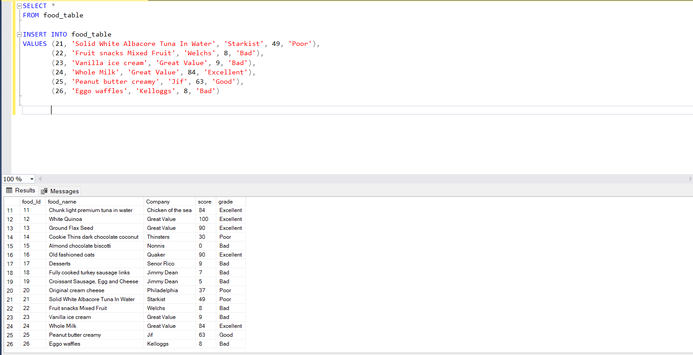

SQL PROJECT 3
As an aspiring Data Analyst, I cannot help but to see the world differently. Maybe it's a curse but I found myself seeing information differently now. As I was organizing my pantry and fridge I took interest in the nutritional facts. I found an app called Yuka that shows and ranks food. I thought it would be a good idea to maybe help me when it came to making sure my family and I eat well.

I inputed the basic values given to me by the app when I scanned food products.

And more inputs
This was my first project using Microsoft SQL Server. My other two SQL projects have been under BigQuery. I found SQL server easier to use than BigQuery mostly due to visability.